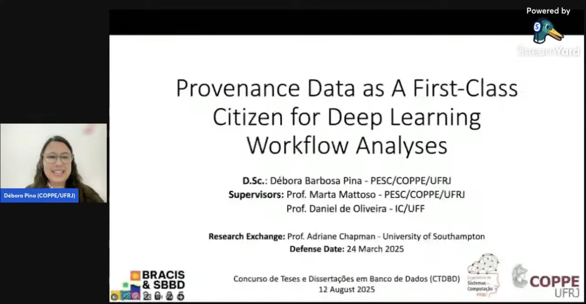
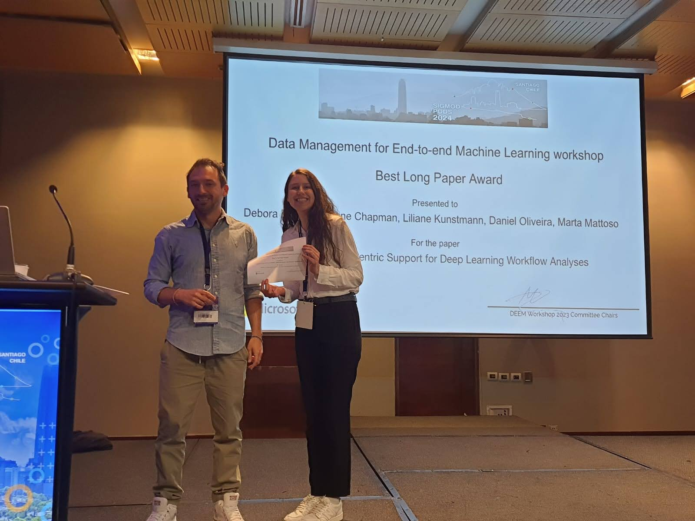

Awards and Grants
Honorable Mention
7th Thesis and Dissertation Contest at the Brazilian Symposium on Databases (SBBD), 2025
Read More Best Full Paper
8th Workshop on Data Management for End-to-End Machine Learning (DEEM) at SIGMOD, 2024
For the paper "DLProv: A Data-Centric Support for Deep Learning Workflow Analyses".
Read More CNPq Scholarship
Doctoral Scholarship, 2021-2025
Doctoral Scholarship from the National Council for Scientific and Technological Development (CNPq), Brazil, for the period of 2021-2025.
CAPES/PRINT Scholarship
Sandwich PhD Scholarship, 2022-2023
Sandwich PhD Scholarship from Coordination for the Improvement of Higher Education Personnel (CAPES), Brazil, for the period of 2022-2023, for a research internship at the French Institute for Research in Computer Science and Automation (Inria), France.